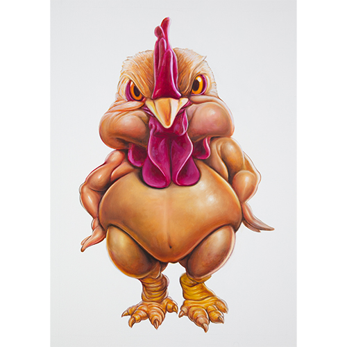
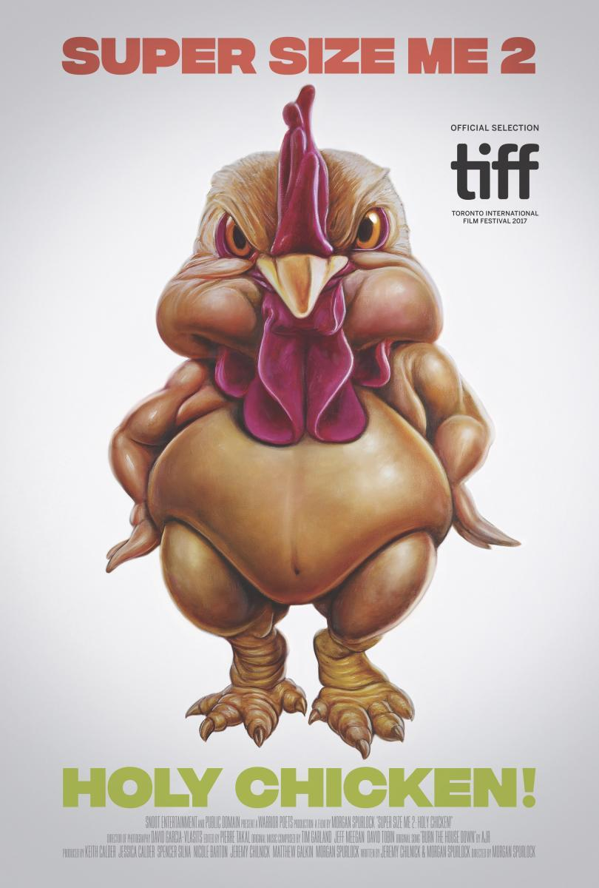

Exhibitions
TOYBOX: America in the Visuals, Corey Helford Gallery, Los Angeles, California, US, December 2, 2017–January 6, 2018.
Literature
Ron English, Original Grin: The Art of Ron English (Paris: Cernunnos, 2019), p. 69. ISBN 978-2374950938.
Notes
Also known as Ten Pound Poultry.
The work is documented on Corey Helford Gallery’s artwork page for TOYBOX: America in the Visuals, where it is identified as Ten Pound Poultry, available here, accessed April 18, 2026.
The image was also used for the poster of Morgan Spurlock’s documentary film Super Size Me 2: Holy Chicken!.
Ancillary Documentation
